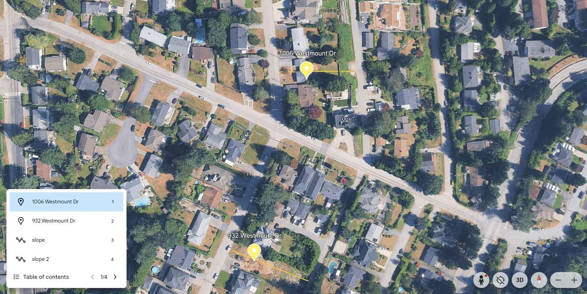
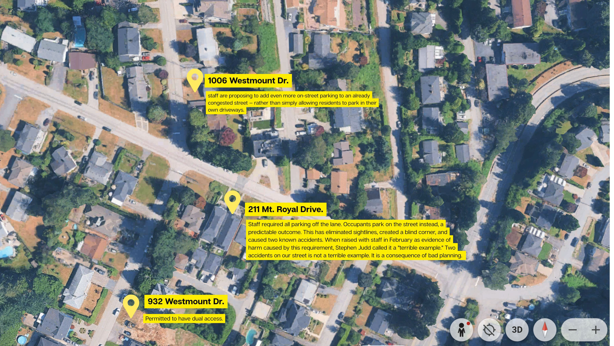
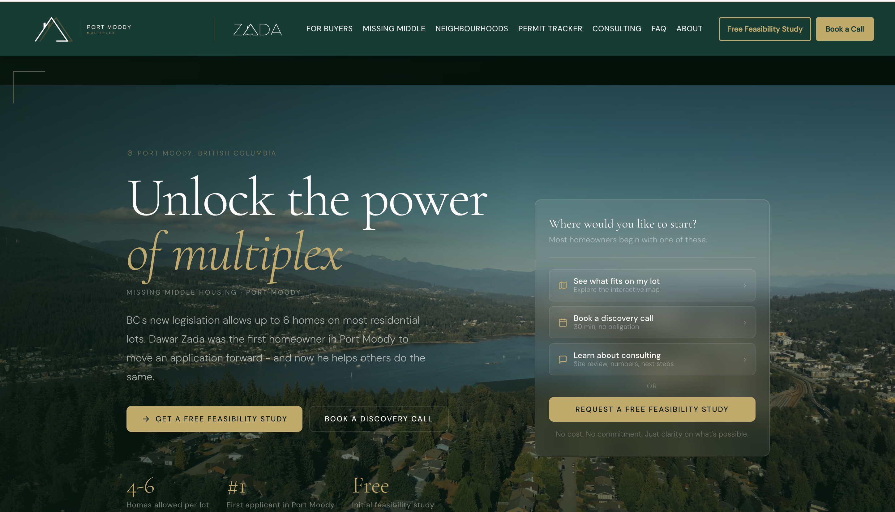
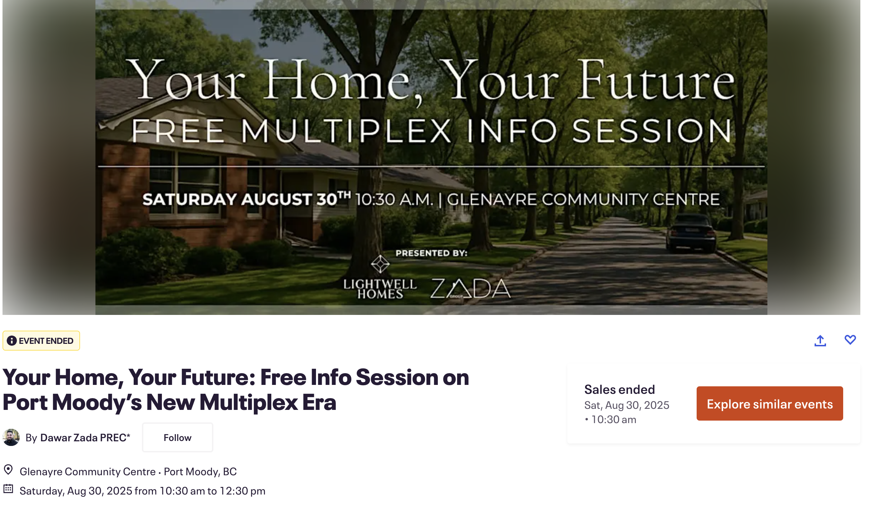
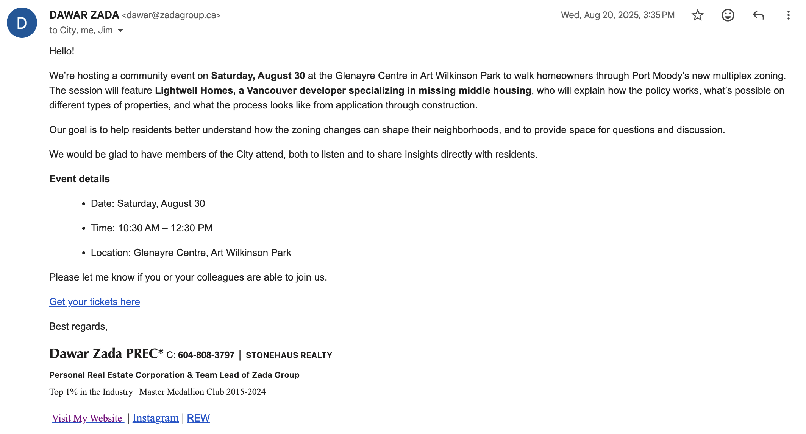

The Applicant
Dawar Zada is a long-time Port Moody resident, realtor, and father of three young children. He purchased 1006 Westmount Drive in 2021 with a straightforward goal: to build a home where his family — including his elderly father — could live together under one roof, in the neighbourhood they had called home for decades.
The challenge was affordability. The only way to make multigenerational living work on this site was to subdivide the property into two lots, each with a coach house — one for his father, and two new homes that would bring a young family and a senior into a neighbourhood that genuinely needs both. It was a practical solution to a common problem: how do families stay together, and stay in the community, when housing costs make that nearly impossible.
When SSMUH was introduced under provincial legislation, it actually offered a better path. Instead of the complexity of a full subdivision, the new framework allowed for the same multigenerational outcome in a more streamlined way — fewer lots, less process, and a result that fit the neighbourhood more naturally. Dawar updated his application accordingly.
Four years later, the goal has not changed. The family is still waiting to build their home.
2021
Consultants & Fees
Submitted
Issued
Two Applications. Same Property.
Different Outcomes.
The comparison below highlights how the same site has been reviewed under two different application pathways.
The 2021 application was a bare land strata subdivision — traditionally one of the more complex development processes. It requires Council approval, surveying, legal lot creation, and coordination across departments. That application proposed 4 dwellings totalling approximately 11,000 sq ft.
The 2025 application was submitted under SSMUH, a provincial framework intended to simplify and streamline approvals. Despite the reduced scale and intent, the requirements and process became significantly more complex. That application proposes 3 dwellings totalling approximately 9,000 sq ft. The comparison below illustrates where those differences occurred.
What follows is Dawar's first SSMUH staff comments letter. This application proposes 3 dwellings totalling approximately 9,000 sq ft — smaller in scope than the 2021 subdivision in every measurable way. Compared to that earlier letter, the SSMUH response is not simpler. It is not faster. It is not clearer. It is longer, more demanding, more adversarial, and offers less of a path forward. If staff wish to argue the applications were dramatically different in nature, they should note the new one is actually the smaller ask. This highlights a key inconsistency this document is intended to clarify.
45 requirements did not just slow this project down.
They made it effectively impossible for the people who would actually want to live here.
Glenayre is not a neighbourhood of developers. It is a neighbourhood of young families who grew up here and are trying to stay, and seniors who have lived here for decades and are trying to age in place. These are not people with development teams, investor capital, or the capacity to absorb years of iterative revisions, geotechnical reports, knotweed management plans, and bird collision strategies on top of an already complex application.
The 45 requirements in the October 8 letter — submitted in response to what the Province explicitly designed as a simplified housing pathway — represent a cost and timeline burden that would deter most private homeowners from proceeding. A family with three young children does not have the resources to fund another round of redesigns, another set of consultant reports, another year of carrying costs on a $2.125M property with no rental income. That is not a hypothetical. It is this family's reality right now.
When SSMUH applications become indistinguishable from full subdivision applications in terms of complexity and cost — when the "easy" route requires more than the hard one — the policy has failed in its implementation. The Province introduced SSMUH to address challenges like this, where process complexity can limit acess for real residents. Port Moody is doing it again, in real time, on this file.
Consistency Across Similar Applications
File MDP00102 at 348 Valour Drive is located one block from Westmount and was processed under the same SSMUH framework within the same time period. Both applications involve similar zoning, similar density, and similar development intent. Understanding these differences is important in identifying how a consistent and predictable approach can be applied moving forward.
Westmount turns onto Valour — these properties are one block apart. Both applications were processed under the same SSMUH framework within the same period. However, the process and outcomes differed significantly between the two files.
Dawar Zada knows this file personally. He connected his 72 year old friend and neighbour, Gurb to Lightwell Homes — a Vancouver-based developer specializing in exactly this kind of missing middle housing — and helped bring the Valour application forward. That collaboration moved efficiently through the City's process — a smooth, workable experience that is now a core part of Gurb's retirement plan. The difference between what Gurb experienced and what Dawar has experienced is not explained by location, zoning, or complexity. It is explained by how two files were handled by two different staff members.
Inconsistency in staff decisions — even well-intentioned inconsistency — has real consequences. It is not a minor administrative matter. For the person on the wrong side of it, it can mean years of delay, hundreds of thousands of dollars, and a life put on hold.
Our Neighbours Got Dual Access.
The Bylaw Entitles Us to the Same.

The owners at 932 Westmount are not strangers. They are neighbours. They are friends. They went through their own difficult, frustrating process dealing with the City — and they got through it. When Dawar asked them directly about how dual access was approved on their property, they told him straight up: they persuaded their way into it.
That is not how a bylaw is supposed to work. Bylaw 2937 Section 6.8 provides a grade exception for exactly this situation. It is not a discretionary favour to be negotiated. It is a written provision that exists precisely because elevation differentials like the ones on this street make lane-only access unreasonable. If one neighbour had to persuade their way into something the bylaw already entitled them to — and another neighbour is being denied that same entitlement without a written reason — then the problem is not the bylaw. The problem is how the bylaw is being applied, and to whom.
It is worth noting what these projects actually represent. The owners of 932 Westmount have actually been approved for dual access on Westmount Drive twice. They built 1018 Westmount, a large 6,900 sq. ft. single-family home, right on this very street. They then returned and were approved again at 932 Westmount for another large single-family home. Both approvals came with four parking spaces at the front and four at the back. That is two approvals of dual access for the same builders, both times for large private single-family residences. At 1006 Westmount, the application is for three dwellings built to house four families, and it has been refused that same accommodation. This project is capped at four total parking spaces, on a street already known for limited street parking. The single-family homes got dual access and eight spots each. The multi-family housing has been refused dual access and given half the parking, without a valid argument as to why.
The City has approved dual access on this street for the same builders on two separate occasions — once at 1018 Westmount, and again at 932 Westmount. Both are large single-family builds. Neither is SSMUH. Neither houses multiple families. Both were accommodated.
At 1006 Westmount, the project is three dwellings for four families — the exact outcome provincial housing legislation exists to enable. The one practical barrier remaining is access. A tree that staff required to be retained makes a drive aisle physically impossible, leaving dual access as the only viable solution. That solution has already been approved on this block. The bylaw already provides for it. The precedent already exists.
The only question is whether the same flexibility that has been extended to large private homes will be applied to the modest infill housing the Province created the framework to deliver.
Areas for Clarity and Consistency
The following excerpts are taken from meetings throughout the application process. They reflect areas where additional clarity, consistency, or alignment may be helpful in applying existing bylaws and policies.
The excerpts below reflect areas where consistency in applying bylaws was unclear, where decisions were deferred without resolution, and where the applicant found it necessary to seek senior-level clarification to move the file forward.
Throughout this process, Dawar agreed to everything: the knotweed plan, the geotechnical report, the bird collision strategy, the sprinklers, the EV stalls, and more. He is not a difficult applicant. But lane-only access is not something he can absorb and move on from — it renders the project physically unworkable for the multigenerational family that was supposed to live there. That is not a negotiating position. It is the reason four years of work is at risk of meaning nothing.
Communication of Available Pathways
In October 2025, Staff issued a 14-page comment letter with requirements spanning Planning, Building, Engineering, Environment, Urban Forestry, and Sustainability. The applicant responded to every single item. What follows is the record of what was asked, what was done, and what remains unresolved.
February 9, 2026 — Having addressed every other item in the staff comment letter, Dawar formally requested a meeting with senior staff to discuss dual access directly. He had reviewed the zoning bylaws himself, identified a potential variance pathway, and wanted to understand the City's position before proceeding.
February 17, 2026 — Meeting held. The Engineering Manager, Planning Manager, and Planning Analyst were present. Dawar outlined the site constraints: a 20.8 foot elevation change, a 33-step grade differential, and the day-to-day accessibility needs of four families including an elderly parent and young children. He raised the variance pathway himself, based on his own reading of the bylaws. No written decision was issued. He was told a written response would follow.
March 3, 2026 — No written follow-up had arrived. Dawar sent a follow-up email to the Engineering Manager and Planning Manager. View email → No response was received.
March 13, 2026 — Dawar attended City Hall in person. He met with Crystal Wickey, who questioned why he had not simply waited for an email response. She confirmed the answer remained no, and asked how he intended to proceed. When Dawar raised the Board of Variance as a possible path forward — as he had done previously, and as staff had acknowledged was available to him — he was advised that staff would not support that route either. Notably, the possibility of a Council Variance, a process that would have been significantly less costly, was not raised. The written response he had been waiting weeks for coincidentally arrived by email later that same day, on his way home from City Hall. View response →
The written response offered two options — both providing single access only. It also noted, before any formal variance application had been submitted, that "staff will not support the proposed variance for a second driveway."
Delays between meetings and written responses are a concern that residents across Port Moody have raised consistently. For applicants navigating a process designed to move quickly, extended gaps in communication make it difficult to plan, respond, or move forward. This file is one of many where that pattern is reflected.
Staff Asked. The Applicant Delivered.
Every requirement across six departments was addressed in the December 2025 response submission.
- ✓Full-size site plan on standalone page
- ✓Building heights labeled in metric
- ✓East and south elevations included
- ✓6.1m building separation clearly labeled
- ✓Retaining wall elevations labeled
- ✓Fence material added to Materials Board
- ✓Privacy fence/wall combination redesigned
- ✓Facade articulation enhanced (Architrix formal response)
- ✓Massing balance between B1/B2 and B3 revised
- ✓Blank foundation walls eliminated on B3
- ✓75% impermeable surface calculation shown
- ✓Minimum 10m² outdoor space shown per unit
- ✓Tree ID numbers made consistent across all plans
- ✓Landscape Plan aligned with Arborist Report
- ✓Building 1 footprint adjusted to support Tree T4
- ✓Hardscaping reduced; permeable surfaces increased
- ✓Permeable paver specifications included
- ✓Additional landscaping in all private outdoor spaces
- ✓Knotweed remediation committed — including neighbouring lot
- ✓Native replacement trees committed beyond minimum
- ✓Wildlife-proof garbage enclosure incorporated
- ✓ESC Permit application submitted
- ✓Bird-window collision mitigation incorporated
- ✓Green infrastructure and stormwater management addressed
- ✓EV-ready charging stalls for all buildings
- ✓Step 4 Energy Step Code / EL-4 Zero Carbon compliance
- ✓All four homes fully sprinklered
- ✓Fire Department Access Plan prepared
- ✓Exterior lighting added to all unit entries
- ✓Theatre room egress addressed
- ✓BCBC 2024, radon depressurization, and solar details included
- ✓Geotechnical report commissioned
- ✓Construction Management Plan prepared
- ✓Preconstruction Infrastructure Condition memo prepared
- ✓Sanitary CCTV inspection committed
- ✓BC Hydro confirmation letter being provided
- ✓Driveway reduced to single letdown; lane apron matched to existing ditch width
Every requirement across six departments was addressed. In several cases the applicant went further than asked — volunteering to remediate knotweed on a neighbouring property, committing to native trees beyond the minimum, and fully sprinklering all four homes.
There is one outstanding point of disagreement: dual access from Westmount Drive. It is the only ask. It is the one condition the applicant cannot redesign around. And it remains the one decision that has never been explained in writing.
The Remaining Issue on This File Is Limited to Access.
The Port Moody Zoning Bylaw (2937, Section 6.8) provides flexibility where site conditions, including elevation, make standard access impractical. This provision exists to allow for case-by-case evaluation based on real site constraints.
At 1006 Westmount, there is a 20.8 ft (6m) elevation difference between the lane and the street. Lane-only access results in significant vertical travel and distance to entry. The surrounding street pattern includes front access on all homes, with several properties incorporating dual access — including 932 Westmount, approved under similar conditions. Given these factors, the request for dual access is based on site-specific conditions and alignment with both bylaw intent and existing precedent.

It is not a hypothetical.
Staff directed the multiplex at 211 Mt. Royal Drive to lane-only access — the same restriction they are pushing at 1006 Westmount. The result is documented and visible. Eleven vehicles between two homes. Most parked on the street and spilling into the neighbouring lane. A blind corner created where none existed before. Two accidents have already occurred. It is the single biggest complaint from the surrounding neighbourhood.
Dawar raised this directly with staff at the February 17 meeting — not as an opinion, but as a documented real-world outcome of the City's own policy. Stephen Judd, Manager of Engineering, called it "a terrible example." Two accidents on a residential street caused by a planning decision is not a terrible example. It is a consequence. And it is the consequence staff are proposing to repeat — on a lot with an even greater elevation drop, housing elderly residents and children, on a street that already has no room for additional on-street vehicles.

Residents on both Westmount Drive and Grouse Lane have watched what lane-only access produced on Mt. Royal. They know exactly what it means. They are not opposed to this development — they are opposed to a planning decision that they have already seen cause accidents one street over. The neighbourhood petition was unambiguous. Several residents have indicated they are prepared to file formal complaints if this restriction is applied here.
View the neighbourhood petition →This Is Not One Family's Bad Luck.
A documented record of development failure on a single block — and it is driving builders out of Port Moody entirely.
The accounts documented above represent the people in Dawar's immediate surrounding area — neighbours he knows personally, whose stories he encountered directly while door-knocking over 1,000 homes across the Glenayre, Seaview and College Park neighbourhoods and compiling what he found. He was not conducting a formal survey. He was not seeking out complaints. These are the stories that surfaced on their own, in a single neighbourhood, from people willing to share them.
There has been no effort to search city-wide. The accounts documented here are not an exhaustive record — they are a fraction of what a broader outreach effort would find. They are simply what one person discovered by showing up and asking.
The Province created a pathway.
Port Moody was required to open it.
Bill 44 passed in 2023. Small-Scale Multi-Unit Housing. The Province removed public hearings. Removed the need for Council votes. Created a staff-led, streamlined process specifically designed to make four-unit housing accessible to homeowners — not just developers — in single-family neighbourhoods across BC.
Dawar had been fighting a subdivision application for years. When SSMUH passed, he saw what it was designed to be: a shorter path. He submitted his application with optimism. He thought: this is finally it.
"A local government cannot impose regulations in its Zoning Bylaw, or through any other development application approval tools, in such a way that unreasonably prohibits or restricts the use or density."
Aligning Local Process
with Provincial Intent
SSMUH was introduced through Bill 44 to create a more accessible and streamlined pathway for small-scale housing. Bill 25 further clarified that local governments should not impose requirements that make these developments financially or practically unworkable. The compliance deadline is June 30, 2026.
| Municipality | SSMUH Approach | Outcome | Source |
|---|---|---|---|
| Burnaby | Eliminated development permit requirement entirely. All residential zones reclassified to SSMUH R1 effective July 1, 2024. Applicants go directly to building permit. | Permit wait times reduced by up to 85%. Received the NAIOP Most Improved Approval Timing Award, 2024. | City of Burnaby 2024 HOME Strategy Progress Report |
| Port Coquitlam | Part of BC's third cohort of housing target municipalities. Streamlined permit intake for SSMUH alongside other Tri-Cities. | Third cohort municipalities collectively surpassed Year 1 housing targets by 143%. | BC Government Housing Targets Progress Report, 2025 |
| Port Moody (stated) |
Full Development Permit required. SSMUH Guide published July 4, 2025 — over a year after the provincial zoning deadline of June 30, 2024. | Stated DP review: 4–6 weeks. Stated total timeline: 12–16 weeks. | Port Moody SSMUH Guide, July 2025 |
| Port Moody (actual pipeline) |
New development applications declined 70% year-over-year. Year 4–5 provincial housing targets identified as at risk. | Staff report to Council: "The decrease in new applications made represents a significant concern to the long-term housing pipeline for Port Moody should this trend continue." | City of Port Moody Staff Report, November 12, 2024 |
Cities that have embraced the SSMUH framework are seeing uptake. Cities where the process remains complex are seeing the opposite. Port Moody's own staff have put that concern on the record. The June 30, 2026 compliance deadline is an opportunity to course-correct — not just on this file, but on the approach more broadly.
| Provision | What It Requires | Status at 1006 Westmount |
|---|---|---|
| Bill 44 (2023) | Municipalities must permit 3–4 unit SSMUH on eligible lots | Technically complied — application is permissible |
| Bill 25 (2025) | Prohibits requirements that make SSMUH financially or practically infeasible | Lane-only access requiring 33 stairs is a practical barrier. Compliance deadline: June 30, 2026 |
| Bylaw 2937 s.6.8 | Alternative street access permitted where grade makes lane access infeasible | Exception cited but never applied. No written rationale provided. Applied at 932 Westmount — not at 1006 |
| SSMUH Guide (July 2025) | Flexibility on access "may be possible on a case-by-case basis" | No case-by-case assessment. Blanket policy confirmed on record by assigned planner |
| Provincial Policy Manual | Cannot impose regulations that unreasonably restrict density | Cited in Port Moody's own June 2024 staff report. Applied at 348 Valour. Not applied here |
Three Reasonable Steps
the City Can Take Now.
We are seeking resolution at the City level. Given all the above context, we don't think these three resolutions are an unreasonable ask.
This was never about profit.
It was always about the neighbourhood
he has been trying to protect.
While fighting a four-year stalled application — one that would have broken most people — Dawar Zada spent that same time helping everyone around him avoid the same fate. He held free community seminars, bringing in builders, housing advisors, and SSMUH experts so residents could hear from people who had actually done it. He personally invited City planning staff to attend every one. He sat one-on-one with neighbours. At kitchen tables. On front stoops. Walking seniors through what SSMUH could look like on a property they had owned for forty years.
For most of them, it was not a development project. It was a retirement plan. A way to downsize into something safer and more manageable while staying in the community they knew — and generating the rental income that finally made the numbers work. Some of those seniors are now in a position to retire because of conversations Dawar started. He helped them see that it was possible. He helped them understand their options. He was doing the work the City was not.
He knows his neighbours need this. And he knows the City is standing in the way of it. When staff are inconsistent — approving dual access on one street, denying it eighty metres away, citing exceptions that were never applied, withholding information about faster pathways — the consequences are not administrative. They are financial. They are life-altering. People are not just frustrated. They are furious. And when you are not consistent as a team regarding the rules, you can literally bankrupt someone. That has already happened on this street.
Dawar's goal is to change that. Not through conflict — through education, transparency, and showing the City what a working SSMUH process actually looks like. He has the network to do it. He has the relationships. He would love to use them to help the community.
just to stay in their homes.
They are not unusual. They are the neighbourhood.


SSMUH was designed to solve exactly this. The City is choosing not to let it.
These applications are rarely about speculative investment or outside developers chasing margin. They are Kevin, who has spent nearly a decade trying to get approval so his daughter can move home from Australia. Manuela, building for herself, her children, and her grandchildren. Oscar, trying to downsize on a property his family has owned for years. Wendy and Shane, creating a forever home. Real residents, real lives, real consequences when the process fails them.
The City sometimes forgets that it is looking at people, not files. Dawar has not forgotten. He is trying to make sure no one else on this street has to go through what he has been through — and that the City eventually becomes the kind of place where that is not necessary.



So far.
The intent of this document is to provide a clear and complete overview of the project history, supporting information, and key considerations.
The goal is to resolve the remaining access issue collaboratively, allowing this project to proceed and helping establish a clear and consistent approach for similar SSMUH applications in Port Moody.
With alignment on this file, there is an opportunity to not only move this project forward, but to support broader success in delivering missing middle housing across the city.